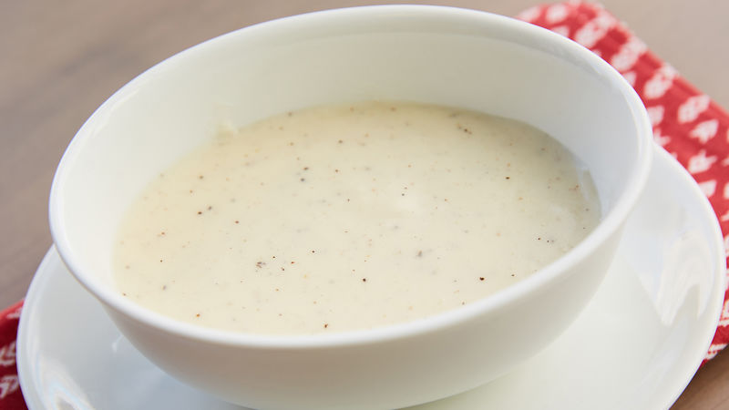

White Sauce

This white sauce, also known as Béchamel sauce, is one of France’s four “mother sauces,” and it’s a perfect complement to many dishes. Pair it with vegetables, turn it into a creamy casserole or ladle it over seafood or sliced chicken.
Ingredients
- 2 tablespoons butter
- 2 tablespoons Gold Medal™ all-purpose flour
- 1/4 teaspoon salt
- 1/8 teaspoon pepper
- 1 cup milk
Recipe instructions
- In 1 1/2-quart saucepan, melt butter over low heat. Stir in flour, salt and pepper. Cook over medium heat, stirring constantly, until mixture is smooth and bubbly; remove from heat.
- Gradually stir in milk. Heat to boiling, stirring constantly; boil and stir 1 minute.
Nutrition
- 25 Calories
- 2g Total Fat
- 1g Total Carbohydrate